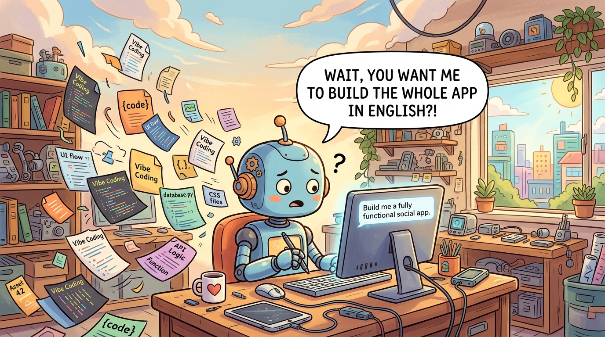

Use vibe coding to explore how tasks flow between human and AI in the Human-AI Product Stack. Quickly prototype different handoff patterns, test where AI confidence varies, and discover which decisions genuinely benefit from human review versus which can be fully delegated. Vibe coding lets you feel the friction points and trust boundaries in your workflow before designing formal systems.
Objective: Learn to position AI and human capabilities within product development workflows for maximum impact.
Chapter Overview
This chapter introduces the Human-AI Product Stack, a framework for understanding how AI capabilities and human judgment interact in successful AI products. Repositioned from the Synergy Triangle, this framework is foundational to everything that follows.
Four Questions This Chapter Answers
- What are we trying to learn? Where AI amplifies human capabilities and where human judgment remains essential in product development workflows.
- What is the fastest prototype that could teach it? A workflow mapping exercise showing how tasks flow between human and AI in a specific product scenario.
- What would count as success or failure? Clear identification of which product decisions should be AI-assisted versus human-led, and why the distinction matters for outcomes.
- What engineering consequence follows from the result? Product architecture should position humans as amplifiers and reviewers of AI outputs, not just passive consumers of AI-generated artifacts.
Learning Objectives
- Understand the Human-AI Product Stack framework
- Identify where AI amplifies human capabilities
- Recognize where human judgment remains essential
- Apply the framework to product design decisions